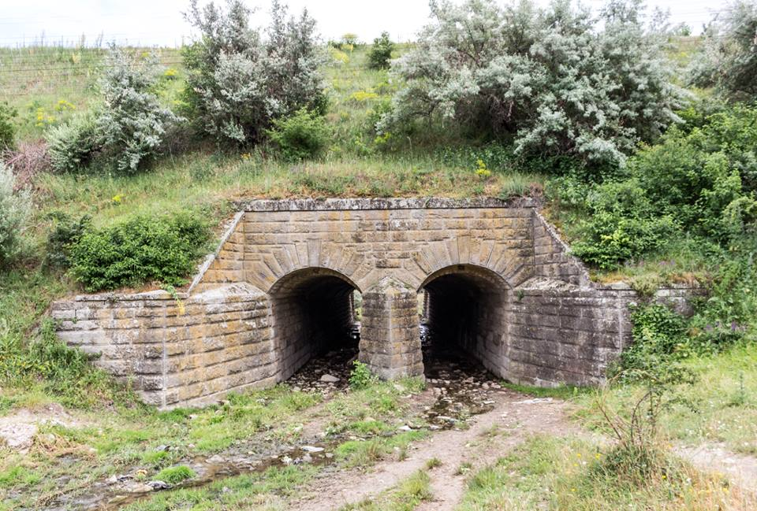
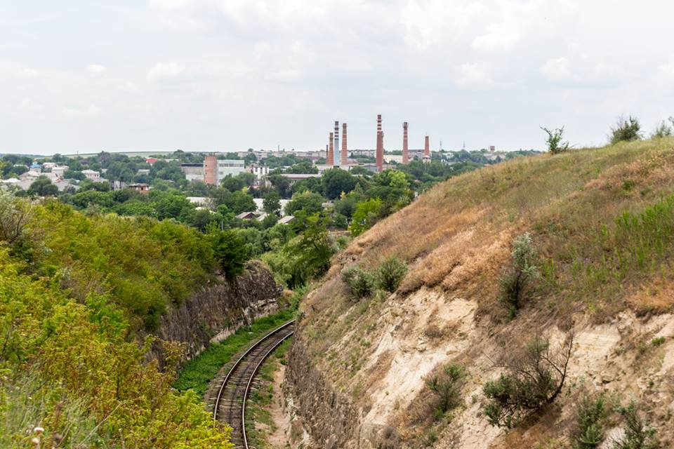
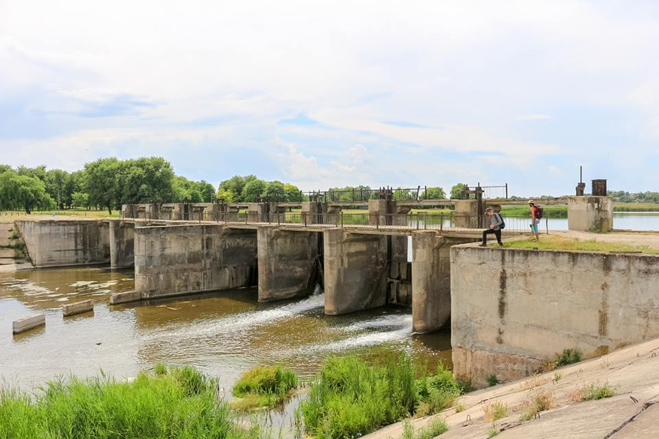
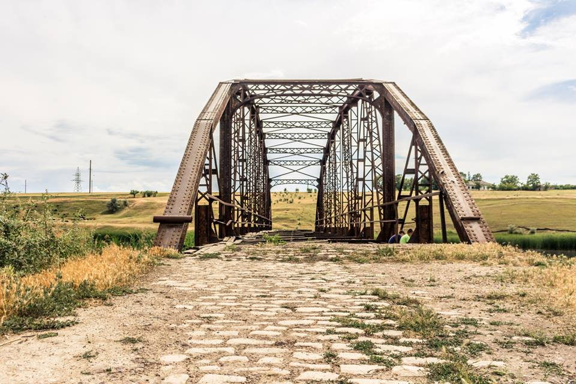

Достопримечательности Флорешты
Историко-этнографический музей

Музей во Флорештах был открыт 24 августа 1974 года. Тут есть интересные этнографические и археологические коллекции и старые книги. Этнографическая коллекция составляет из себя предметы национальной молдавской одежды, музыкальные интструменты, кувшины из дерева и металла для домашнего хозяйства. А коллекция старинных книг - это книги, выпущенные на румынском, русском и греческом языках в различных типографиях, включая Кишинёвскую епархиальную типографию, которая была основана в 1814 году. Большинство книг религиозного характера. Особенное место в этой коллекции занимает “Апостол” первого русского типографа И. Федорова.
Водоотводные сооружения
Cтарые водоотводные сооружения конца XIX века под железной дорогой (с другой стороны выбит год - 1898).
Cкальная выемка
На окраине города расположена скальная выемка - удивительное для наших мест сооружение конца XIX века. Выемку длиной в несколько сотен метров вырубили в скале для того, чтобы паровозы могли спокойно пройти через возвышенность в данном месте. Это было дешевле, чем рыть тоннель.
Флорештское водохранилище
Вышли к флорештскому водохранилищу на Реуте. Реку перекрывает мощная бетонная плотина, по которой проходит дорога.
Ажурный арочный мост
Мост действительно старый, его тут установили в самом начале ХХ века ещё до Первой Мировой Войны. Удивительное дело - почти все слышали про железнодорожный мост в Унгенах, который незаслуженно купается в лучах славы - ведь на самом деле это обычная типовая советская постройка конца 1940- х гг, а не плод инженерного ума того самого Эйфеля. А вот про настоящий старинный и дошедший до нас целиком вековой мост времён Николая II во Флорештах наслышано гораздо меньше людей. И сейчас эта настоящая жемчужина и интереснейший объект, каких в нашей стране больше нет, ржавеет и потихоньку рассыпается, будучи забытым и покинутым. Сейчас по нему пройти и человеку опасно, транспорту и вовсе здесь искать нечего.
Самолет-памятник Миг-19П

Установлен этот интересный памятник во Флорештах предположительно в конце 70-х годов. Известно, что списанный самолет для памятника пожертвовал находящийся в 5 км от Флорешт Маркулештский авиаполк. На памятной доске есть надпись: «Летчикам-освободителям от благодарных потомков».